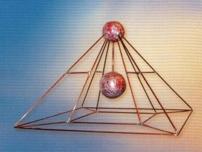
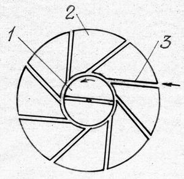
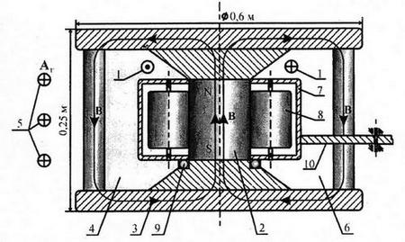

Энергия пространства


Пустое пространство, т.е. идеальный вакуум, по
определению не содержит ничего, в том числе и энергии. Однако так
считают только обычные люди. Альтернативно мыслящие ученые (см. нашу
публикацию от 15 мая 2012) уверены, что именно пространство и обеспечит
человечество бесплатной неограниченной и экологически чистой энергией.
«Научных» обоснований этого сколько угодно.
По общей теории относительности А. Эйнштейна пространство может
растягиваться, сжиматься, искривляться, закручиваться, отклоняя световые
лучи, меняя отбиты спутников и планет, смещая звезды и целые галактики.
При этом оно, конечно, совершает работу. Так почему бы не использовать
его рабочую силу?
По общепринятой сейчас квантовой теории поля идеальный вакуум вовсе не
пустота, а «физическое пространство», представляющее собой скопище
бесконечного числа частиц и античастиц, которые непрерывно рождаются и
аннигилируют. Частицы хотя и не реальные, а «виртуальные», т.е.
выдуманные, но обладают электрическим зарядом и создают вокруг себя
электрическое и магнитное поле. Поэтому «пустое» пространство заполнено
флуктуирующими полями. Так как число частиц в объеме бесконечно, то
и энергия этих полей оказывается бесконечной. Даже после
«перенормировки» (отброса бесконечностей) энергия физического вакуума
остается очень большой – 1095 эрг/см3 по данным Я.Б. Зельдовича, на
которые ссылаются изобретатели. Зачем же сжигать нефть и газ – возьмем
чуть-чуть тепла из квантового пространства! К такому выводу пришел д.
физ.-мат. н. М.П. Бронштейн ещё в 1935 году [1]. Он доказал ошибочность
закона сохранения энергии и технику коммунизма предложил строить на
основе вечных двигателей. Руководство СССР, рассмотрев предложение,
передало дело в суд, который признал, что доктор занимается
вредительством, за что как враг народа он был расстрелян. Сейчас же за
такие предложения не только не расстреливают, но даже дают премии,
ордена и медали.
Согласно современной космологии, космическое пространство заполнено
материей – видимой и тёмной менее чем на 30 %. Основная же его
составляющая – это «темная энергия». Так как космологи не признают
материализма, то эта энергия, т.е. движение, существует без
материального носителя, сама собой. Тем не менее, она чем-то
расталкивает галактики, и те удаляются друг от друга с ускорением. А
почему бы не заставить темную энергию толкать поршни наших
двигателей и вращать турбины! Каменный уголь и нефть до разжигания тоже
темные.
Ст.н.с. Курчатовского института В.В. Чернуха развил «поляризационную
теорию мироздания», с помощью которой объяснил не только потусторонний
мир, левитацию, самовозгорание, предсказание будущего, геопатогенные
зоны и прочие необъяснимые феномены, но и возможность вечного двигателя
[2.3]. Он пишет: «Поляризационная физика считает возможным создание
генераторов, работающих без подачи химического или ядерного топлива и
без использования внешних источников энергии, таких как Солнце или
температурная стратификация среды. Для этого мы должны научиться
использовать необычные свойства поляризационного мира. Из него можно
извлекать (не нарушая закона сохранения энергии!) и использовать
энергию, строя в релятивистском мире концентрирующие её специальные
поляризационные энергогенераторы. При потреблении энергия рассеивается и
возвращается обратно в поляризационный мир, восстанавливая исходный
энергобаланс... Поляризационная физика – это новая, делающая первые шаги
наука, развитие которой позволит создать новый промышленный и
технологический базис, необходимый для создания общества изобилия» ([3],
раздел 2.8.1). Теперь понятно, почему Курчатовский институт охладел к
своим токамакам – поляризационный генератор оказывается лучше!
Свою «единую физику» развивает В.И. Ильин [4,5]. Она основана на том,
что «вакуум – это реальная среда чудовищной плотности с нелинейными
свойствами» ([4], с. 98), имеющая «вид матрёшки, т.е. вставленных друг в
друга сферически симметричных нейтральных сред» (с. 17). На базе своих
представлений автор решил не только все нерешенные проблемы физики, но и
объяснил биополе, эффект омагничивания воды, чернобыльскую аварию, НЛО,
морское «квакание», Бермудский треугольник, Тунгусский феномен. А самое
главное – он якобы открыл путь новой энергетике. Если другие теоретики
ограничиваются только высказыванием альтернативных идей, то Ильин провёл
эксперименты по откачке энергии из вакуума ([5], с. 38 – 50),
подтвердив опыты А.В. Чернетского (см. ниже). Это дало ему возможность
заключить:
«Нашей главной целью всегда было достижение концептуального единства в
понимании всех явлений природы, в рамках которого возможность получения
энергии из вакуума выглядела бы как жёстко обусловленная закономерность.
Результаты проведенного эксперимента указывают на то, что эта задача
решена» (с. 49). Тогда давайте отапливаться и освещаться вакуумом!
«Научное» обоснование получения энергии из вакуума дал также д.
физ.-мат. н., академик РАЕН, директор Международного института
теоретической и прикладной физики РАЕН, создатель торсионных генераторов
А.Е. Акимов. Он утверждает: «Уверен, что повысить качество
преобразования тепла в электричество реально в течение ближайших
нескольких лет. И тогда, конечно, появятся автономные энергоустановки,
которым не нужны запасы недр» (МК, 16.09.2003). Несколько лет давно
прошло, но бестопливные энергоустановки так и не появились. Вторит
Акимову его коллега по «торсиону» д. физ.-мат. н., академик РАЕН,
директор Научного центра физики вакуума, автор запатентованного в
Таиланде безопорного движителя Г.И. Шипов: «О вакуумных двигателях мы
уже говорили. Они очень скоро вытеснят ракетную технику... Вихревые
технологии сегодня обеспечивают огромные запасы энергии без выброса
тепла вовне» (МК, 13.04.2004). На самом деле ни тогда, ни сейчас они
ничего не дают, а Акимов и Шипов председателем комиссии РАН по
лженауке академиком Э.П. Кругляковым отнесены к ученым с большой дороги
[6].
Вакуумной энергетикой интенсивно занимаются и украинские ученые Н.В.
Косинов и В.И. Гарбарук [7]. По их выводам, традиционный способ
получения энергии путем превращения вещества в вещество должен уступить
новому, вакуумному: «Возможность получения вакуумной энергии находит
естественное объяснение без отступления от физических законов...
Энергетические установки с избыточным энергобалансом смогут открыть
доступ к огромной энергии вакуума, запасенной самой Природой».
Даже Нобелевский лауреат Р. Фейнман в своих лекциях по физике образно
говорил: «В вакууме, заключенном в объеме обыкновенной электрической
лампочки, энергии такое большое количество, что её хватило бы, чтобы
вскипятить все океаны на Земле». Вывод знаменитого ученого подтверждает
лауреат медали свободы Американского биографического института
(заместителем управляющего которого является В.П. Гоч, см. ниже),
академик Академии паранаук А.В. Фролов: «Не существует пространства, в
котором нет энергии», и «в любой точке пространства возможно получения
мощности за счёт преобразования форм энергии самого пространства без
расхода масс топлива» [8]. А Л.Н. Прокопьев так прямо и назвал свою
книгу «Энергетика пространства» [9]. К сожалению, теоретики не сообщают
нам, как реально получить мифическую энергию. Даже изобретатель Анквич,
рекламирующий свой «Способ неограниченного получения энергии из
пространства» [10], его описания не дал. Так что же реального
достигнуто в области пространственной энергетики?
Самый простой аппарат продемонстрировал на выставке «Архимед» один
приехавший из деревни дедок. Он взял обычное железное корыто для стирки
белья, четырьмя веревками подвесил его к потолку, а под корытом
поставил деревянную лавку. По его словам, корыто действует как
цилиндрическая линза, концентрирующая космическую энергию (видимо,
тёмную) на лежащем на лавке больном. Прогрев космосом исцеляет от любых
болезней, а изобретателю дает прибавку к пенсии.
Предприниматель Голод запатентовал пирамиды удлиненной формы, доказав,
что они концентрируют космическую энергию лучше не только корыта, но и
египетских пирамид. Несколько сооружений появилось вокруг Москвы. Падкие
до сенсаций журналисты убедились, что вода в них не замерзает даже в
лютый мороз. Голод же стал продавать такую воду и камешки из пирамиды
как лекарство. Одни камень, говорят, даже летал в космос.
Куда больших успехов в пирамидном бизнесе добились В.П. Гоч и В.К.
Селищев [11]. Они добавили в проволочную пирамидку пару шаров – один на
вершину, а другой в центр (рис. 1). В результате пирамида приобрела
новое качество – гасить «отрицательную энергетику» и создавать вокруг
себя зону высокой «положительной энергетики» в радиусе 25 м. По
рекламным данным, пирамидка повышает мощность и снижает токсичность
автомобильных моторов, снижает вязкость нефтепродуктов, уничтожает
грызунов, насекомых и вредные микроорганизмы, создавая при этом
комфортную «энергетику» для людей и полезных животных и микробов. Она
якобы уже применяется на большом числе предприятий. На Клинском
мясокомбинате пирамидка позволила избавиться от мышей и крыс, увеличить в
пять раз выпуск мясной продукции при значительном улучшении её
качества. Хорошая реклама расширила круг покупателей и повысила цену
прибора. В результате Гоч стал доктором биологических и технических
наук, профессором, Лучшим целителем III тысячелетия, действительным
членом Украинской АН, академиком Европейской академии естественных наук,
Академии медико-технических наук, Международной академии
энергоинформационных наук, Международной академии проскопических наук
им. М. Нострадамуса, почетным профессором Азербайджанского
международного университета, почетным доктором Международного
университета франкоговорящих. Он удостоен премий А. Чижевского и В.
Вернадского, многих орденов, золотых медалей ВВЦ и ряда международных
выставок – всего 81 награда! Немного отстал от Гоча и его соавтор
к.т.н., доцент, выпускник Бауманского института В.К. Селищев, тоже не
боящийся ст. 182 (Заведомо ложная реклама) и ст. 200 (Обман
потребителей) УК РФ, которые у нас почему-то не действуют.

Рис. 1Вопрос о «положительной» и «отрицательной» энергетике - это, оказывается, не простой рекламный трюк альтернативных академиков. Эта тема интересует и серьёзных ученых – к. филос. н. Н.Н. Латыпова, к. физ.-мат. н. В.А. Бейлина и к. физ.-мат. н. Г.М. Верешкова из Ростовского университета [12]. Исследовав «сложноструктуированный объект – самоорганизующийся физический ваккум» (с. 4), они пришли к выводу, что энергия кварк-глюонного и хиггсовского вакуумных конденсатов отрицательна и равна соответственно -1036 и – 1055 эрг/cм3, а энергия пространства, заполненного кротовыми норами, - положительна (с. 126 – 134). Только не понятно, как пирамиды отличают одно пространство от другого, отбирая «положительную» составляющую.
«Научным» обоснованием эффекта пирамиды занялся к. физ.-мат.н. С. Герасимов с помощниками [13]. Он изготовил пластиковую пирамидку с размерами рёбер 157х157х148 мм и помещал в неё датчик в виде цилиндрического конденсатора, заполненного водой. Измерял напряжение на конденсаторе в пирамиде и для сравнения в цилиндре. Ученый пишет, что сомневается в самозаточке бритв при их помещении в пирамиду, на что в 1959 году К. Дрбалу выдан патент Чехословакии № 91304, и не очень-то верит в то, что дохлые кошки в пирамиде не пахнут. Однако сам наблюдал не меньшую чертовщину. 21.03.2008 из датчика вдруг вытекла вода, а частенько на нём резко подскакивало напряжение. Из исследований Герасимов сделал вывод, что «под пирамидой что-то происходит». На самом деле измеряемый сигнал был на уровне шумов и помех от сети, радио- и телепередатчиков (0,05 – 0,2 В). Поэтому можно было обнаружить всё, что угодно, даже кошку (подключив вместо вольтметра телевизор).
Настоящий вакуумный двигатель изобрёл Б.П. Додонов с коллегами [14] (см. книгу [9]). Двигатель содержит подвешенный на нити ротор 1, который размещен в статоре 2, снабженном прорезями 3 (рис. 2). Прорези выполнены под косым углом к радиусу. Поэтому, как полагает автор, излучение пространства, падая по касательной на боковую поверхность ротора, будет его раскручивать. Однако в эксперименте двигатель вращаться не стал, хотя однажды, говорят, и сделал 4,5 оборота. Л.Н. Прокопьев уменьшил трение ротора, соорудив для него магнитную подвеску [9]. Но и в этом случае ротор сам раскручиваться не захотел. Тогда автор начал его подталкивать то в одну, то в другую сторону. И чудо свершилось! Однажды в сторону, указанную стрелкой, двигатель совершил на 10 оборотов больше, чем в обратном направлении. Отсюда Прокопьев сделал однозначный вывод об экспериментальном подтверждении существования поля вакуума и предложил на открытом им принципе строить электростанции. Вакуумная станция (ВАЭС) должна представлять собой установленные в пещере в центре горы гигантский ротор и статор электрогенератора. Снаружи к машинному залу пробиты тоннели для подачи раскручивающего вакуумного топлива. Строить ВАЭС почему-то не стали. Видимо, предложили автору проверить факт раскрутки – не ветерок ли однажды дунул в прорези статора?

Рис. 2Государство приняло участие лишь в создании вакуумного генератора Ю.А. Баурова. Как сотруднику ЦНИИ Машиностроения, ему были предоставлены все возможности института для изготовления опытных образцов. Бауров изложил свои результаты в книге [15], которая получила высокую оценку д. физ.-мат. н. профессора Л.В. Лескова (Российское космическое агенство) и академика РАН Н.А. Анфимова.
Чтобы обосновать наличие неизвестных науке сил вакуума, которые должны раскручивать его двигатель, Бауров разбил пространство на маленькие одномерные объекты, назвав их по своим инициалам «бюонами». По его представлениям, в космосе «постоянно происходит рождение и уничтожение, расширение и сокращение бюонов», создавая некий «векторный потенциал». Если ввести магнит, то он «создает область пространства, в которой действует новая сила, и система магнита с телом движется в пространстве за счёт энергии физического вакуума». «Краном, через который энергия пространства поступает к потребителю, служит векторный потенциал используемой магнитной системы». Бауров не ограничился теорией, но и создал реальный аппарат для извлечения полезной работы из «самого большого бассейна энергии во Вселенной – физического пространства». Тем самым, по его словам, он показал, как преодолеть энергетический голод и надвигающуюся экологическую катастрофу. Устройство и способ отбора энергии у придуманных бюонов защищены российскими и международными патентами (ссылки см. в [15]).
Аппарат Баурова (рис. 3) построен и испытан в ЦНИИмаше. Для создания необходимого векторного потенциала 1 в нём используется постоянный магнит 2, который в сочетании с магнитопроводом 3 создает магнитное поле в 1,1 Тесла. Вокруг магнита размещен цилиндрический барабан 7, в котором установлены шесть бронзовых роликов 8. Масса каждого ролика 1 кг, а всего барабана – 15 кг. Работа аппарата, по словам автора, основана на том, что в области 4 векторный потенциал магнитной системы направлен навстречу векторному потенциалу пространства 5, а в области 6 – наоборот. Поэтому ожидалось, что барабан начнёт раскручиваться силой пространства по часовой стрелке. Однако, как честно признал изобретатель, самораскрутки не произошло. Пришлось разгонять ротор до 2000 об/мин внешним

Рис. 3электродвигателем. Но и тут неудача: мощность, потребляемая на разгон по и против часовой стрелки, «отличалась незначительно». Тогда начали изучать торможение ротора после раскрутки в том и другом направлении. Оказалось, что время торможения при вращении по часовой стрелке иногда было на 20 – 35 % больше времени торможения в обратном направлении, но в 20 % случаев наблюдалась обратная картина. Несмотря на неопределённость результатов, автор делает однозначный вывод об экспериментальном подтверждении сил пространства. Экологически чистые генераторы будущего, использующие энергию пространства, по прогнозам Баурова, «могут быть использованы как генераторы электрической энергии, так и как движители для автомобилей и летательных аппаратов» (с. 189 книги [15]).
Несостоятельность выводов Баурова очевидна. Во-первых, «бюоны» существуют лишь в голове автора, и поэтому никакой силы пространства создать не могут. А во-вторых, эксперимент также подтвердил отсутствие силы, ибо полученная тяга не превышала 10 Г, что при весе барабана в 15 кг лежит на грани ошибки измерений. Да и эти результаты к сожалению проверить уже нельзя – после слишком сильной раскрутки аппарат сломался. Спасибо автору за честность: в отличие от других изобретателей вечных двигателей он не заявил, что его двигатель до поломки самораскручивался.
В отличие от Баурова, изобретатель из Воронежа А.С. Кащук разбивает пространство не на неведомые бюоны, а на известные гравитоны, и на этой основе создает свой «Способ получения энергии и установку для его осуществления» [16]. Гравитон, как он считает, представляет собой брусочек, одна половина которого состоит из северных магнитных монополей, а другая из южных. Если этот брусочек деформировать, то он начинает генерировать магнитное поле, ток индукции которого снимается катушкой и подается в электросети. Деформация почему-то осуществляется крайне энергозатратным обстрелом дейтериевых таблеток пучком поляризованных дейтронов при температуре вблизи 0 К. Так как ни гравитонов, ни монополей, ни способов намотки на них катушек не существует, то изобретение Кащука трудно прокомментировать.
СМИ много сообщали о генераторах, созданных и испытанных профессором А.В. Чернетским [17] и академиком Р.Ф. Авраменко [18]. Оба качали энергию из вакуума с помощью вольтовой дуги. Первый назвал свою установку «самогенерирующим разрядом», а второй – «плазменным бластером». Дуговой генератор по измерениям авторов выделяет в несколько раз больше энергии, чем потребляет из розетки. А в 1971 году из-за слишком большого выброса энергии при демонстрации установки в МАИ якобы даже сгорела трансформаторная подстанция института.
Работы профессора и академика продолжили в ЦНИИмаше Ю.А. Бауров, Г.А. Беда и др. [15]. Они сделали плазмотрон мощностью 1 МВт. В одном из опытов 22.04.1994 в 15 часов по их словам наблюдался выход энергии из струи, вдвое превышающий потребление из сети. Так как цена одного опыта составляла 30 млн. рублей, то довести работу до конца не удалось. Поэтому в 1998 году в ЦНИИмаше сделали новый плазмотрон мощностью 60 кВт. Однако в нём повышение энергии составило всего 10 – 40 %. Тем не менее, разработчики сделали вывод о возможности получения энергии из пространства с помощью разряда.
Во всех трёх случаях авторы допускали ошибки при измерении мощности, не учитывая того факта, что дуга является сильно нелинейным элементом. На вольт-амперной характеристике дуги имеется участок с отрицательным сопротивлением, которое используется, например, в генераторах СВЧ на туннельных диодах. Однако отрицательным является лишь дифференциальное сопротивление dU/dI, тогда как нормальное сопротивление U/I всегда положительно. Поэтому электрическая дуга в любом режиме горения потребляет энергию от внешнего источника и не может служить её генератором.
В современном обществе под действием СМИ настолько укоренилось мнение о том, что пустое пространство, вакуум не пусто, а что-то содержит, что появился такой анекдот. Поссорились две подруги. Одна говорит другой: «У тебя в голове один вакуум». А та ей отвечает: «У меня-то хоть вакуум есть, а у тебя ничего нет». Аналогичной точки зрения стали придерживаться и многие ученые, от которых и пошла мода на вакуумную энергетику.
Пустое пространство не может дать какой-либо энергии хотя бы потому, что её у него нет. Энергия – это мера движения материи, а пространство – не материя, а лишь её вместилище, место нахождения. Совершать работу, т.е. толкать тела, давить на них, раскручивать может только что-то материальное, но никак не место нахождения тела, не пустота или ничто. Недаром говорят в народе: «Не место красит человека, а человек место». Пустое пространство, вакуум не может не только производить энергию, но и передавать её, в чем легко убедиться на работе термоса. Что же касается квантового «физического» пространства, заполненного виртуальными (т,е, выдуманными) частицами, то и оно неработоспособно, так как находится в наинизшем энергетическом состоянии, опускаться из которого некуда – энергия любого тела всегда больше.
Таким образом, все надежды на вакуумную энергетику нужно отбросить и искать реальные пути получения альтернативной энергии.
1. М.П. Бронштейн. Сохраняется ли энергия? Социалистическая реконструкция и наука, 1935, № 1, с. 7 - 10
2. В.В. Чернуха. Поляризационная теория Мироздания. М., Атомэнергоиздат, 2008
3. В.В. Чернуха. Мы и миры мироздания. Новая физическая картина мира. М., 2012 (в печати)
4. В.И. Ильин. Триумф классического закона и крушение квантово-релятивистской физики. М., 2005
5. В.И. Ильин. Энергия из вакуума – электрическая искра и космический
телескоп ставят под сомнение термоядерную гипотезу светимости Солнца и
звёзд. М., 2009
6. Э.П. Кругляков. «Ученые» с большой дороги. М., Наука, 2001
7. Н.В. Косинов, В.И. Гарбарук. Мир подступается к вакуумной энергии.
Физич. вакуум и природа, 1999, № 2; Энергетический феномен вакуума. http://rusnauka.narod.ru/lib/autor/Kosinov n/1/, 2001
8. А.В. Фролов. Свободная энергия. ЖРФМ, 1997, № 1 – 12, с. 59 – 94
9. Л.Н. Прокопьев. Энергетика пространства. М., Ариэль-ЛЭБ, 1994
10. Способ неограниченного получения энергии из пространства. ЖРФМ, 1997, № 1 – 12, с. 95 – 96
11. В.П. Гоч и др. Пат. РФ на ПМ № 68216, 68322; Евраз. пат. № 007760, 008673 и др.
12. Н.Н. Латыпов, В.А. Бейлин, Г.М. Верешков. Вакуум, элементарные
частицы и Вселенная. В поисках физических и философских концепций XXI
века. М., изд-во МГУ, 2001
13. С. Герасимов. Пирамида мистическая, пирамида физическая. Инженер,
2008, № 11, с. 10 – 12; Вода, электричество и... пирамида. Инженер,
2010, № 5, с. 4 – 7
14. Заявка на изобретение № 722575, 1984
15. Ю.А. Бауров. Структура физического пространства и новый способ получения энергии. М., Кречет, 1998
16. Пат. РФ № 2145124, 2148278 от 16.04.1997
17. А.В. Чернетский. О физической природе биоэнергетических явлений и их моделирование. М., ВЗПИ, 1989
18. Р.Ф. Авраменко (о его трудах). Изобретатель и рационализатор, 1992, № 5, 6; 1994, № 10.
.